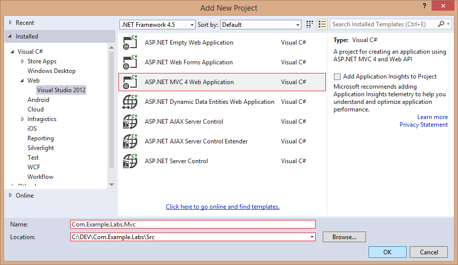
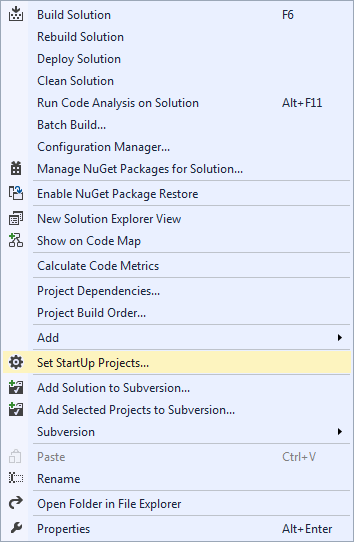
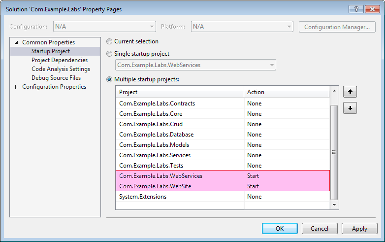
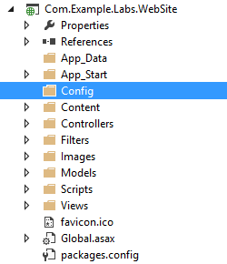
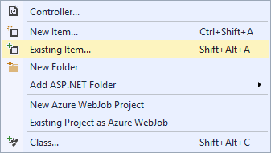
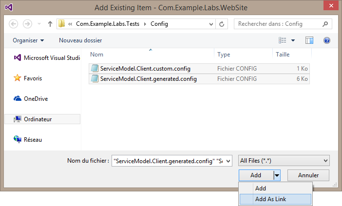
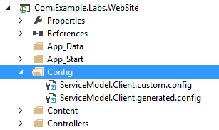

Add a new ASP.NET MVC project to the solution.
Add the references to the following assemblies.

References
Set the startup projects.
The WebServices project must start before the WebSite in order to be consumed.
Edit the Application Configuration file and remove the <connectionStrings> section (the database access should be managed by the WebServices project only).
Open the App.config file located to the Tests project and copy (or merge) each red section in the WebSite Application Configuration file.
For example (do not use this because it can be out-of-date)
<!-- From Com.Example.Labs.Tests\App.config --> <?xml version="1.0"?> <configuration> <configSections> <section name="serviceLocatorConfiguration" type="System.ServiceLocatorSectionHandler, System.Extensions" /> <section name="loggerServiceConfiguration" type="System.LoggerServiceSectionHandler, System.Extensions" /> <section name="smtpServiceConfiguration" type="System.SmtpServiceSectionHandler, System.Extensions" /> <section name="queueExecutionTracerServiceConfiguration" type="System.QueueExecutionTracerServiceSectionHandler, System.Extensions" /> <section name="xmlExecutionTracerServiceConfiguration" type="System.XmlExecutionTracerServiceSectionHandler, System.Extensions" /> <section name="mailTemplateServiceConfiguration" type="Com.Example.Labs.Core.MailTemplateServiceSectionHandler, Com.Example.Labs.Core" /> <section name="serviceProxyConfiguration" type="Com.Example.Labs.ClientCore.ServiceProxySectionHandler, Com.Example.Labs.ClientCore" /> </configSections> <serviceLocatorConfiguration> <instances> <instance interface="System.ILoggerService, System.Extensions" implementation="System.LoggerService, System.Extensions" instancingMode="Singleton" /> <instance interface="System.ICacheService, System.Extensions" implementation="System.LocalMemoryCacheService, System.Extensions" instancingMode="Singleton" /> <instance interface="System.IMessengerService, System.Extensions" implementation="System.MessengerService, System.Extensions" instancingMode="Singleton" /> <instance interface="System.ISmtpService, System.Extensions" implementation="System.SmtpService, System.Extensions" instancingMode="Singleton" /> </instances> </serviceLocatorConfiguration> <loggerServiceConfiguration isEnabled="True" outputPath="Logs\DefaultLogs.log.txt" /> <smtpServiceConfiguration hostname="smtp.free.fr" port="25" username="" password="" senderName="Com.Example.Labs Team" from="contact@example.com" cc="" bcc="" redirection="" enableSsl="false" useDefaultCredentials="true" /> <xmlExecutionTracerServiceConfiguration isEnabled="True" withDebugTrace="True" outputPath="Logs\ExecutionTracer.log.xml" /> <queueExecutionTracerServiceConfiguration isEnabled="True" withDebugTrace="True" maxItems="1024" rollTimer="1" /> <serviceProxyConfiguration isLocal="False" /> <mailTemplateServiceConfiguration path="App_Data\MailTemplates" /> <!-- DO NOT COPY THIS SECTION --> <connectionStrings> <add name="Default" connectionString="Data Source=localhost;Initial Catalog=Labs;Integrated Security=SSPI;" /> </connectionStrings> <system.serviceModel> <behaviors> <endpointBehaviors> <behavior name="defaultEndpointBehavior"> <technicalException /> <operationException /> <entityValidationException /> </behavior> </endpointBehaviors> </behaviors> <client configSource="Config\ServiceModel.Client.generated.config" /> <bindings> <wsHttpBinding> <binding closeTimeout="00:02:00" openTimeout="00:02:00" sendTimeout="00:02:00" maxBufferPoolSize="2147483647" maxReceivedMessageSize="2147483647"> <readerQuotas maxArrayLength="2147483647" maxNameTableCharCount="2147483647" maxStringContentLength="2147483647" maxDepth="2147483647" maxBytesPerRead="2147483647" /> <security mode="None" /> <!--<security mode="TransportWithMessageCredential"> <transport clientCredentialType="None" proxyCredentialType="None" realm="" /> <message clientCredentialType="UserName" negotiateServiceCredential="true" algorithmSuite="Default" establishSecurityContext="true" /> </security>--> </binding> </wsHttpBinding> </bindings> <extensions> <behaviorExtensions> <add name="technicalException" type="Com.Example.Labs.Core.TechnicalExceptionElement, Com.Example.Labs.Core" /> <add name="operationException" type="Com.Example.Labs.Core.OperationExceptionElement, Com.Example.Labs.Core" /> <add name="entityValidationException" type="Com.Example.Labs.Core.EntityValidationExceptionElement, Com.Example.Labs.Core" /> </behaviorExtensions> </extensions> </system.serviceModel> </configuration>
Add the Config directory.
Add Existing Item on it.
Select (Add > Add As Link) the two files located in the Tests\Com.Example.Labs.Tests\Config\ directory.
Result
Edit the Com.Example.Labs.WebSite.csproj with Notepad and add the following Target node before the final </Project> tag.
... <Target Name="CopyLinkedContentFiles" BeforeTargets="Build"> <Copy SourceFiles="%(Content.Identity)" DestinationFiles="%(Content.Link)" SkipUnchangedFiles='true' OverwriteReadOnlyFiles='true' Condition="'%(Content.Link)' != ''" /> </Target> </Project>
This means that the process will copy the linked files at each build (otherwise Config directory is empty).
The MVC project is now ready to consume the WebServices layer through the ServiceProxy<T> class.